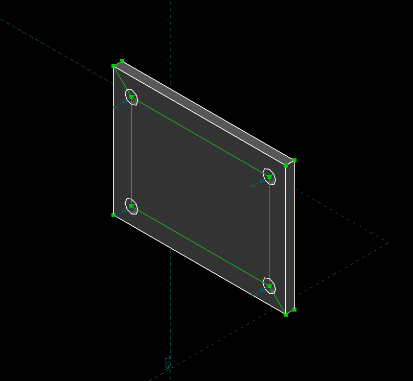

week <<
Previous Next >> week6-9
week2-5
week2
創建github倉儲並且練習github指令
1.創立並且加入課程倉儲git clone到近端上(至mde.tw中下載2019fall可攜套件)。
2.使用git config --global user設定姓名、email、proxy。
3.使用git submodule add 之指令建立目錄並取下子模組。
4.輸入python -m pip install flask cors。
5.當要開啟近端時必須要先進入cmsimde才能夠打上python wsgi.py指令，且開啟的隨身碟必須為正確的非虛擬的磁碟槽(如:d: or e:)才能夠開啟。
week3
Solvespace編譯
1.Y:\portablegit\bin\sh.exe 改名為 sh_rename_for_solvespace.exe。
2.查驗github版本(2.13以上)。
3. git clone --recurse-submodules。
4.編輯cmakelist內之713及714行(加入#字號)。
5.cd solvespace>cd extlib>cd libpng>mkdir build>cd build。
6.執行cmake .. -G "MinGW Makefiles" -DCMAKE_BUILD_TYPE=Release
mingw32-make。
7.進行 libpng.dll.a 更名, 更名名為 libpng_static.a。
8.回到 solvespace 原始碼目錄,建立 build 目錄後進入 build 目錄。
9.在一次執行cmake .. -G "MinGW Makefiles" -DCMAKE_BUILD_TYPE=Release
mingw32-make。
week4
錄影程式及字幕編輯軟件
1.錄影可以使用apowerREC
或者是ShareX
2.編輯字幕可以使用學校網站的字幕編輯軟體Aegisub，運用音檔或者是影片檔配置字幕。
3.若使用音檔則必須將影片和字幕檔結合，我選擇使用Arctime
4.接下來要將浮水印印在影片左下角，使用Video watermark。
課程的浮水印:
week5
solvespace圖面繪製練習
1.運用左方工作區繪製出長方形。
2.點選線並且運用快捷鍵D標註尺寸如:長度40 寬度30。
3.繪製長方形參照線，點選線後運用快捷鍵G即可以繪製出綠色參照線。
4.繪製圓形孔，繪製完後四個孔之孔徑均不相同。
5.按下兩孔並且用快捷鍵Q使其孔徑一致其他孔也是一樣方式。
6.運用前述的快捷鍵D標註孔之尺寸。
7.運用SHIFT加X使其拉伸並且輸入想要的厚度。
8.若要看正視圖可以使用W，W判定的標準是以游標最接近的面去做正視。
9.若要看到等角圖則可以使用F3使其回到等角圖的樣子。
成品圖

影片教學:
使用快捷鍵:
sketch rectangle (R)
sketch line segment(S)
sketch circle (C)
constrain distance (D)
constrain angle (N)
nearest isometric view (F3)
align view to workplane(W)
equal length/radius/angle (Q)
extrude (shift+X)
常使用其他快捷鍵:
sketh arc of a circle(A)
sketh cubic bezier spline(B)
two line perpencudilar ([)
two line parallel (L)
two line symmetry (Y)
verticel (V)
horizontal(H)
same direction(X)
split line(I)
tangent arc(shift+A)
benchmark(P)
week <<
Previous Next >> week6-9